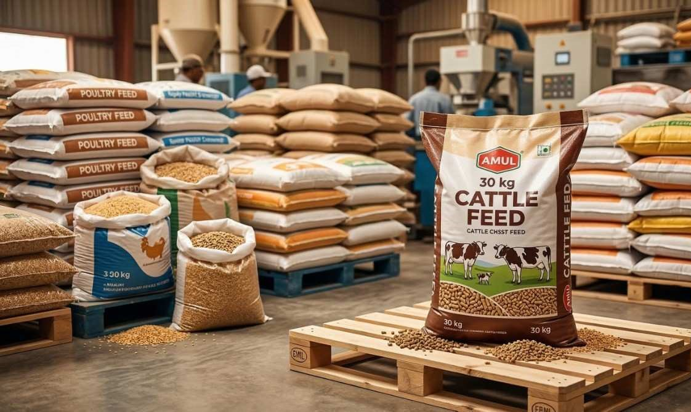

Durable polypropylene woven and BOPP laminated bags for poultry feed, cattle feed, fish feed and livestock nutrition companies. Designed to maintain product freshness, support brand identity and withstand distribution demands across India.
| Specification | Details |
|---|---|
| Material | Virgin Polypropylene Woven |
| GSM Range | 70 GSM to 120 GSM |
| Available Sizes | 10 KG, 25 KG, 50 KG, Custom |
| Ventilation | Micro Perforated available |
| Lamination | BOPP Glossy or Matte |
| Printing | Up to 6 colors |
| Closure | Stitched bottom |
Yes. Polypropylene woven bags are widely used for animal feed packaging as they are strong, moisture resistant and safe for storing all types of animal nutrition products.
Yes. We print full nutritional details, feeding guidelines, brand name and product images on animal feed bags in up to 6 colors.
Yes. Micro perforated polypropylene bags allow airflow which is important for pellet feed and grain-based animal feed products that require ventilation.
25 KG and 50 KG are most popular for bulk supply to farms. 10 KG BOPP laminated bags are popular for retail pet and livestock feed brands.